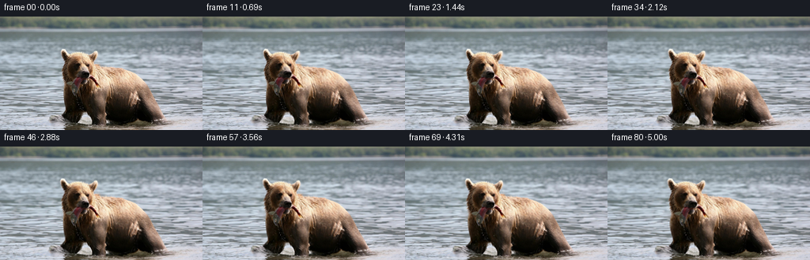

CODING AGENTS AS PIXEL WORLD MODELS
traex/DeepSeek-V4.1-Flash · 0872_s2
点击播放 · 原生 RGB 像素
逐轮保存的候选
回放视频、检查图与代码变化。
每份候选均可单独播放。实际图片检查记录在下方工具轨迹中。
候选 01播放与检查图
点击播放 · 原生 RGB 像素

展开代码变化
--- 上一保存版本
+++ 本次保存版本
@@ -0,0 +1,193 @@
+from pathlib import Path
+
+import cv2
+import numpy as np
+from PIL import Image
+
+import artifact_io
+
+
+CASE_DIR = Path(__file__).resolve().parent
+WIDTH = 256
+HEIGHT = 144
+FRAME_COUNT = 81
+FPS = 16
+
+
+def smoothstep(edge0, edge1, value):
+ t = np.clip((value - edge0) / (edge1 - edge0), 0.0, 1.0)
+ return t * t * (3.0 - 2.0 * t)
+
+
+def gaussian(x, y, cx, cy, sx, sy):
+ return np.exp(-0.5 * (((x - cx) / sx) ** 2 + ((y - cy) / sy) ** 2))
+
+
+def build_subject_alpha(image):
+ """Recover the connected bear-and-fish silhouette from color and locality."""
+ rgb = image.astype(np.float32)
+ r, g, b = rgb[..., 0], rgb[..., 1], rgb[..., 2]
+ value = rgb.mean(axis=2)
+ yy, xx = np.mgrid[:HEIGHT, :WIDTH]
+
+ region = (xx > 70) & (xx < 223) & (yy > 35)
+ warm = (r > b * 1.075) & (r > g * 1.006) & (r > 30) & (b < r * 0.965)
+ dark = (value < 68) & (r > b * 0.78)
+ seed = ((warm | dark) & region).astype(np.uint8)
+
+ seed = cv2.morphologyEx(seed, cv2.MORPH_CLOSE, np.ones((5, 5), np.uint8))
+ seed = cv2.morphologyEx(seed, cv2.MORPH_OPEN, np.ones((3, 3), np.uint8))
+
+ count, labels, stats, _ = cv2.connectedComponentsWithStats(seed, 8)
+ if count <= 1:
+ raise RuntimeError("Could not isolate the subject")
+ largest = 1 + int(np.argmax(stats[1:, cv2.CC_STAT_AREA]))
+ subject = (labels == largest).astype(np.uint8)
+
+ contours, _ = cv2.findContours(subject, cv2.RETR_EXTERNAL, cv2.CHAIN_APPROX_SIMPLE)
+ filled = np.zeros_like(subject)
+ cv2.drawContours(filled, contours, -1, 1, thickness=cv2.FILLED)
+ filled = cv2.morphologyEx(filled, cv2.MORPH_CLOSE, np.ones((5, 5), np.uint8))
+
+ # Soften only the outer contour; the interior remains fully protected.
+ alpha = cv2.GaussianBlur(filled.astype(np.float32), (0, 0), 1.15)
+ alpha *= 1.0 - 0.38 * smoothstep(127.0, 143.0, yy)
+ return np.clip(alpha, 0.0, 1.0)
+
+
+def render_frame(source, subject_alpha, frame_index):
+ if frame_index == 0:
+ return source.copy()
+
+ seconds = frame_index / FPS
+ duration = (FRAME_COUNT - 1) / FPS
+ progress = seconds / duration
+ ramp = smoothstep(0.0, 0.55, seconds)
+ phase = 2.0 * np.pi * progress
+
+ yy, xx = np.mgrid[:HEIGHT, :WIDTH].astype(np.float32)
+ water = smoothstep(14.0, 28.0, yy)
+ water_depth = 0.18 + 0.82 * smoothstep(18.0, 142.0, yy)
+
+ # A restrained push-in and tiny handheld drift keep the scene alive without
+ # destabilizing the subject's silhouette.
+ camera_progress = 0.5 - 0.5 * np.cos(np.pi * progress)
+ zoom = 1.0 + 0.021 * camera_progress
+ shake_x = ramp * (
+ 0.16 * np.sin(2.0 * np.pi * 0.39 * seconds + 0.4)
+ + 0.06 * np.sin(2.0 * np.pi * 0.91 * seconds + 1.7)
+ )
+ shake_y = ramp * (
+ 0.12 * np.sin(2.0 * np.pi * 0.34 * seconds + 1.2)
+ + 0.04 * np.sin(2.0 * np.pi * 0.83 * seconds + 0.3)
+ )
+ center_x, center_y = 130.0, 82.0
+ sample_x = center_x + (xx - center_x) / zoom + shake_x
+ sample_y = center_y + (yy - center_y) / zoom + shake_y
+
+ # Long, shallow wave trains dominate the open water. Reflections near the
+ # bear receive a second, faster ripple so the waterline does not feel rigid.
+ amplitude = water * water_depth * ramp
+ wave_x = amplitude * (
+ 0.72 * np.sin(2.0 * np.pi * (xx / 53.0 - yy / 47.0 + 0.17 * seconds))
+ + 0.31 * np.sin(2.0 * np.pi * (xx / 23.0 + yy / 71.0 - 0.31 * seconds) + 1.3)
+ + 0.10 * np.sin(2.0 * np.pi * (xx / 12.0 - yy / 55.0 + 0.46 * seconds) + 2.0)
+ )
+ wave_y = amplitude * (
+ 0.19 * np.sin(2.0 * np.pi * (xx / 61.0 - yy / 39.0 - 0.14 * seconds) + 0.6)
+ + 0.07 * np.sin(2.0 * np.pi * (xx / 17.0 + yy / 29.0 + 0.33 * seconds))
+ )
+
+ # The body breathes and rocks; the head and fish then add smaller,
+ # overlapping deformations so no single region moves like a rigid cutout.
+ body_dx = ramp * 0.62 * np.sin(0.86 * phase + 0.2)
+ body_dy = ramp * 0.23 * np.sin(1.08 * phase + 1.0)
+
+ head_weight = gaussian(xx, yy, 101.0, 76.0, 29.0, 28.0) * subject_alpha
+ head_angle = ramp * 0.020 * np.sin(1.03 * phase + 0.35)
+ head_dx = -head_angle * (yy - 76.0) * head_weight
+ head_dy = head_angle * (xx - 101.0) * head_weight
+
+ jaw_weight = gaussian(xx, yy, 99.0, 91.0, 23.0, 16.0) * subject_alpha
+ jaw_dx = ramp * 0.34 * np.sin(1.64 * phase + 0.1) * jaw_weight
+ jaw_dy = ramp * 0.29 * np.sin(1.64 * phase + 1.2) * jaw_weight
+
+ fish_weight = (
+ gaussian(xx, yy, 154.0, 103.0, 54.0, 34.0)
+ * smoothstep(101.0, 128.0, xx)
+ * subject_alpha
+ )
+ fish_angle = ramp * 0.017 * np.sin(1.92 * phase - 0.25)
+ fish_dx = -fish_angle * (yy - 104.0) * fish_weight
+ fish_dy = 0.62 * fish_angle * (xx - 126.0) * fish_weight
+
+ chest_weight = gaussian(xx, yy, 142.0, 104.0, 43.0, 34.0) * subject_alpha
+ chest_scale = ramp * 0.0042 * np.sin(0.73 * phase + 1.6)
+ chest_dx = chest_scale * (xx - 142.0) * chest_weight
+ chest_dy = chest_scale * (yy - 104.0) * chest_weight
+
+ subject_dx = body_dx + head_dx + jaw_dx + fish_dx + chest_dx
+ subject_dy = body_dy + head_dy + jaw_dy + fish_dy + chest_dy
+ sample_x += wave_x + subject_alpha * subject_dx
+ sample_y += wave_y + subject_alpha * subject_dy
+
+ output = cv2.remap(
+ source,
+ sample_x.astype(np.float32),
+ sample_y.astype(np.float32),
+ interpolation=cv2.INTER_CUBIC,
+ borderMode=cv2.BORDER_REFLECT_101,
+ ).astype(np.float32)
+
+ # Modulate reflected light in broad, low-amplitude bands. The effect is
+ # suppressed over fur and fish so the subject retains its original detail.
+ open_water = water * (1.0 - subject_alpha) * ramp
+ shimmer_a = np.sin(
+ 2.0 * np.pi * (yy / 9.5 - xx / 116.0 + 0.43 * seconds)
+ )
+ shimmer_b = np.sin(
+ 2.0 * np.pi * (yy / 17.0 + xx / 73.0 - 0.27 * seconds) + 1.8
+ )
+ light = open_water * (1.15 * shimmer_a + 0.55 * shimmer_b)
+ light *= 0.35 + 0.65 * smoothstep(22.0, 75.0, yy)
+ output += light[..., None] * np.array([0.52, 0.68, 0.92], np.float32)
+
+ # Small contact ripples at the two visible waterline shoulders.
+ ripple_light = np.zeros_like(xx)
+ for cx, cy, strength in ((75.0, 105.0, 0.85), (205.0, 111.0, 0.65)):
+ radius = np.sqrt(((xx - cx) / 1.55) ** 2 + (yy - cy) ** 2)
+ ring_radius = 4.0 + 7.0 * progress
+ envelope = np.exp(-((radius - ring_radius) / 4.8) ** 2)
+ envelope *= 1.0 - smoothstep(17.0, 34.0, radius)
+ ripple_phase = 2.0 * np.pi * (radius / 8.5 - 0.48 * seconds)
+ ripple = envelope * np.sin(ripple_phase)
+ sample_x += strength * 0.34 * ripple * open_water
+ sample_y += strength * 0.10 * ripple * open_water
+ ripple_light += strength * envelope * np.maximum(0.0, ripple)
+
+ output += ripple_light[..., None] * np.array([1.2, 1.5, 1.8], np.float32)
+
+ # Preserve the source's muted overcast palette with only a tiny exposure
+ # breath, avoiding synthetic color shifts or saturated highlights.
+ exposure = 1.0 + 0.0035 * np.sin(0.67 * phase - 0.4)
+ output *= exposure
+ return np.clip(output, 0.0, 255.0).round().astype(np.uint8)
+
+
+def main():
+ source = np.asarray(Image.open(CASE_DIR / "first_frame.png").convert("RGB"))
+ if source.shape != (HEIGHT, WIDTH, 3):
+ raise ValueError(f"Unexpected source shape: {source.shape}")
+
+ subject_alpha = build_subject_alpha(source)
+ frames = np.empty((FRAME_COUNT, HEIGHT, WIDTH, 3), dtype=np.uint8)
+ for frame_index in range(FRAME_COUNT):
+ frames[frame_index] = render_frame(source, subject_alpha, frame_index)
+
+ if not np.array_equal(frames[0], source):
+ raise AssertionError("Frame 0 must be pixel-identical to first_frame.png")
+ artifact_io.save(frames, CASE_DIR)
+
+
+if __name__ == "__main__":
+ main()
候选 02播放与检查图

可观测工具轨迹
实际执行的命令与返回图片。
命令 1exit 0
/bin/bash -c "pwd && rg --files -g '"'!*.git*'"' | sed -n '1,160p'"
命令 2exit 0
/bin/bash -c "sed -n '1,240p' prompt.txt"
命令 3exit 0
/bin/bash -c "sed -n '1,280p' GENERATION_RULES.md"
命令 4exit 0
/bin/bash -c "file first_frame.png 2>/dev/null; identify first_frame.png 2>/dev/null || true; find . -maxdepth 2 -type f -printf '%p %s bytes\\n' | sort"
命令 5exit 0
/bin/bash -c "cat task_spec.json && sed -n '1,260p' artifact_io.py"
命令 6exit 0
/bin/bash -c "sed -n '1,260p' player_template.html"
命令 7exit 0
/bin/bash -c "python - <<'PY'
from PIL import Image
import numpy as np
im=Image.open('first_frame.png')
print(im.mode, im.size)
a=np.array(im)
print(a.shape,a.dtype,a.min(),a.max(),a.mean((0,1)))
# unique count, common colors
u,c=np.unique(a.reshape(-1,a.shape[-1]),axis=0,return_counts=True)
idx=np.argsort(c)[-20:][::-1]
for i in idx: print(tuple(u[i]), int(c[i]), round(c[i]/a.shape[0]/a.shape[1],4))
PY"命令 8exit 0
/bin/bash -c "python - <<'PY'
from PIL import Image
import numpy as np
im=np.array(Image.open('first_frame.png').convert('RGB'))
# print luminance ascii, 128 x 72 preserving roughly 2:1 char
chars=' .:-=+*#%@'
g=im.mean(2)
for y in range(0,144,2):
row=''
for x in range(0,256,2):
v=g[y:y+2,x:x+2].mean()
row+=chars[min(9,int(v/256*10))]
print(f'{y:03d} '+row)
PY"命令 9exit 0
/bin/bash -c "python - <<'PY'
from PIL import Image
import numpy as np
from colorsys import rgb_to_hsv
im=np.array(Image.open('first_frame.png').convert('RGB')).astype(float)/255
# HSV vectorized
mx=im.max(2); mn=im.min(2); d=mx-mn
h=np.zeros_like(mx)
r,g,b=im[:,:,0],im[:,:,1],im[:,:,2]
m=d>1e-6
idx=(mx==r)&m; h[idx]=((g[idx]-b[idx])/d[idx])%6
idx=(mx==g)&m; h[idx]=(b[idx]-r[idx])/d[idx]+2
idx=(mx==b)&m; h[idx]=(r[idx]-g[idx])/d[idx]+4
h/=6; s=np.where(mx>0,d/mx,0); v=mx
for name,a in [('H',h),('S',s),('V',v)]:
print(name, np.percentile(a,[0,1,5,10,25,50,75,90,95,99,100]))
# coarse hue bins/class map, each cell 4x4 use dominant category
# color class: dark, grey, bluecyan, green, brown/orange, bright
for y in range(0,144,4):
row=''
for x in range(0,256,4):
hh=h[y:y+4,x:x+4].mean(); ss=s[y:y+4,x:x+4].mean(); vv=v[y:y+4,x:x+4].mean()
if vv<.12: c='#'
elif ss<.12: c='.' if vv<.5 else ':'
elif hh<.05 or hh>.95: c='R'
elif hh<.12: c='O'
elif hh<.2: c='Y'
elif hh<.45: c='G'
elif hh<.58: c='C'
elif hh<.72: c='B'
elif hh<.88: c='P'
else: c='M'
row+=c
print(f'{y:03d} {row}')
PY"命令 10exit 0
/bin/bash -c "python - <<'PY'
from PIL import Image
im=Image.open('first_frame.png')
print(im.getexif())
print(im.info)
PY
python - <<'PY'
try:
import cv2; print('cv2',cv2.__version__)
except Exception as e: print('no cv2',e)
try:
import scipy; print('scipy',scipy.__version__)
except Exception as e: print('no scipy',e)
try:
import sklearn; print('sklearn',sklearn.__version__)
except Exception as e: print('no sklearn',e)
PY"命令 11exit 1
/bin/bash -c "python - <<'PY'
from PIL import Image
import numpy as np
im=np.array(Image.open('first_frame.png').convert('RGB'))
# color-coded 2x2 crops print at 128x72, use rough exact rgb dominant hue based categories
R,G,B=im[:,:,0].astype(int),im[:,:,1].astype(int),im[:,:,2].astype(int)
# object score warm: R > B*1.15 and R>G*1.05
warm=(R>B*1.12)&(R>G*1.02)&(R>45)
dark=(R+G+B<180)
for y in range(36,144,2):
row=''
for x in range(64,220,1):
# aggregate 2x1
ww=warm[y:y+2,x].mean(); dd=dark[y:y+2,x].mean()
if ww>.5: c='O'
elif dd>.5:c='#'
else:
v=(R[y:y+2,x].mean()+G[y:y+2,x].mean()+B[y:y+2,x].mean())/3
c=' .:-=+*%@'[min(9,int(v/256*10))]
row+=c
print(f'{y:03d} {row}')
PY"命令 12exit 0
/bin/bash -c "python - <<'PY'
from PIL import Image
import numpy as np
im=np.array(Image.open('first_frame.png').convert('RGB')).astype(float)/255
# classify each 2x2 block using mean rgb
for y in range(0,144,2):
row=''
for x in range(0,256,2):
r,g,b=im[y:y+2,x:x+2].mean((0,1)); v=max(r,g,b)
if v<.10: c='@'
elif v<.25: c='#'
elif r>g*1.08 and r>b*1.18: c='O'
elif r>g*1.03 and g>b*1.08: c='o'
elif g>r*1.04 and g>b*1.02: c='G'
elif b>r*1.08: c='b'
elif v>.83: c='W'
elif v>.65: c='+'
elif v>.48: c='-'
elif v>.30: c='.'
else: c=':'
row+=c
print(f'{y:03d} {row}')
PY"命令 13exit 0
/bin/bash -c "python - <<'PY'
from PIL import Image
import numpy as np
from sklearn.cluster import MiniBatchKMeans
im=np.array(Image.open('first_frame.png').convert('RGB'))
# sample all, cluster RGB+xy lightly
h,w,_=im.shape
Y,X=np.mgrid[:h,:w]
features=np.c_[im.reshape(-1,3)/255.0, X.reshape(-1)/w*.35,Y.reshape(-1)/h*.35]
km=MiniBatchKMeans(14,random_state=2,n_init=10).fit(features)
lab=km.labels_.reshape(h,w)
# sort labels by center rgb brightness/color
cent=km.cluster_centers_[:,:3]*255
order=np.lexsort((cent[:,2],cent[:,1],cent[:,0]))
chars='0123456789ABCDEFGHIJKLMNOPQRSTUVWXYZabcdefghij'
mapping={int(v):chars[i] for i,v in enumerate(order)}
print('clusters')
for i,v in enumerate(order):
c=cent[v]; n=(lab==v).sum(); yy,xx=np.where(lab==v)
print(mapping[int(v)], 'rgb',tuple(np.round(c).astype(int)), 'n',n, 'bbox',xx.min(),yy.min(),xx.max(),yy.max())
for y in range(0,144,2):
row=''
for x in range(0,256,2):
vals,cnt=np.unique(lab[y:y+2,x:x+2],return_counts=True)
row+=mapping[int(vals[cnt.argmax()])]
print(f'{y:03d} {row}')
PY"命令 14exit 0
/bin/bash -c "python - <<'PY'
from PIL import Image
import numpy as np
im=np.array(Image.open('first_frame.png').convert('RGB')).astype(float)
R,G,B=im[:,:,0],im[:,:,1],im[:,:,2]
warm=(R>B*1.12)&(R>G*1.02)&(R>40)
dark=(R+G+B<150)
# warm row bounds and count
print('row warm min/max/count dark minmax/count')
for y in range(38,144,2):
xs=np.where(warm[y])[0]; ds=np.where(dark[y])[0]
if len(xs):
# warm contiguous runs >2
splits=np.split(xs,np.where(np.diff(xs)>1)[0]+1); runs=[(s[0],s[-1]) for s in splits if len(s)>=3]
else:runs=[]
if len(ds):
splits=np.split(ds,np.where(np.diff(ds)>1)[0]+1); druns=[(s[0],s[-1]) for s in splits if len(s)>=3]
else:druns=[]
print(f'{y:3d}',runs[:5],len(xs),druns[:5],len(ds))
PY"命令 15exit 0
/bin/bash -c "python - <<'PY'
from PIL import Image
import numpy as np
im=np.array(Image.open('first_frame.png').convert('RGB')).astype(float)
# save crops enlarged via PIL nearest, allowed to inspect? create intermediates yes
Image.fromarray(im.astype('uint8')[34:144,60:215]).resize((620,440),Image.Resampling.NEAREST).save('bear_crop.png')
# print representative rgb points
for p in [(82,46),(90,50),(100,55),(110,70),(130,85),(150,90),(170,90),(180,100),(150,110),(125,115),(125,125),(185,130),(120,137),(80,90),(200,100),(210,120),(100,30),(230,70),(50,100)]:
x,y=p;print(p,im[y,x].astype(int))
PY"命令 16exit 0
/bin/bash -c "python - <<'PY'
from PIL import Image
import numpy as np
im=np.array(Image.open('first_frame.png').convert('RGB'))
# alpha segmentation using color and location plus manually recognized silhouette in ascii. Print downsample stats around central region.
# foreground likelihood from cluster warm/dark based on saturation and brown hue
f=im.astype(float); r,g,b=f[:,:,0],f[:,:,1],f[:,:,2]
warm=(r>b*1.10)&(r>g*1.015)&(r>35)
# smooth via box
import cv2
s=cv2.GaussianBlur(warm.astype(np.float32),(0,0),1.5)
# print mask as 2x2
for y in range(34,144,2):
row=''
for x in range(64,218,2):
v=s[y:y+2,x:x+2].mean()
row += '#' if v>.62 else '+' if v>.28 else '.' if v>.08 else ' '
print(f'{y:03d} {row}')
PY"命令 17exit 0
/bin/bash -c "python - <<'PY'
from PIL import Image
import numpy as np
im=np.array(Image.open('first_frame.png').convert('RGB')).astype(float)
# Print per region edge maps to understand reflections. vertical gradient magnitude rows
import cv2
g=cv2.cvtColor(im.astype('uint8'),cv2.COLOR_RGB2GRAY).astype(float)
for y in [16,24,32,40,48,60,80,100,120,140]:
print(y,'mean',im[y].mean(0).round(1),'std',im[y].std(0).round(1))
# downsample block colors grid around x 0..256 / 32 and y chunks
for y in range(0,144,12):
print('Y',y)
for yy in range(y,min(y+12,144),6):
print(yy, [tuple(im[yy:yy+6,xx:xx+32].mean((0,1)).astype(int)) for xx in range(0,256,32)])
PY"命令 18exit 0
/bin/bash -c "python - <<'PY'
from PIL import Image
import numpy as np, cv2
im=np.array(Image.open('first_frame.png').convert('RGB')).astype(np.float32)
r,g,b=im[:,:,0],im[:,:,1],im[:,:,2]
v=im.mean(2)
warm=(r>b*1.08)&(r>g*1.008)&(r>32)&(b<r*0.96)
dark=(v<60)&(r>=b*.85)
roi=np.zeros((144,256),bool);roi[35:144,70:220]=1
mask=((warm|dark)&roi).astype(np.uint8)
# close
mask=cv2.morphologyEx(mask,cv2.MORPH_CLOSE,np.ones((5,5),np.uint8))
mask=cv2.morphologyEx(mask,cv2.MORPH_OPEN,np.ones((3,3),np.uint8))
n,labels,stats,cents=cv2.connectedComponentsWithStats(mask)
for i in np.argsort(stats[1:,4])[::-1][:10]+1: print(i,stats[i].tolist(),cents[i])
# output largest contours filled? save mask image intermediate
Image.fromarray(mask*255).save('mask_raw.png')
PY"命令 19exit 0
/bin/bash -c "python - <<'PY'
from PIL import Image
import numpy as np
m=np.array(Image.open('mask_raw.png'))>0
for y in range(36,144,2):
row=''
for x in range(64,224,2):
v=m[y:y+2,x:x+2].mean()
row += '#' if v>.75 else '+' if v>.25 else ' '
print(f'{y:03d} {row}')
PY"命令 20exit 0
/bin/bash -c "python - <<'PY'
from PIL import Image
import numpy as np
im=np.array(Image.open('first_frame.png').convert('RGB'))
# Generate exact sampled horizontal strips across y for selected x regions to assess texture
for y in [0,8,16,24,32,40,48,56,64,72,80,88,96,104,112,120,128,136,143]:
print('\\ny',y)
for x in [0,32,64,80,96,112,128,144,160,176,192,208,224,240]:
print(x,tuple(im[y,x]),end='; ')
print()
PY"命令 21exit 1
/bin/bash -c 'python generate.py'
命令 22exit 0
/bin/bash -c "python generate.py && python - <<'PY'
from PIL import Image
import numpy as np, json
frames=np.stack([np.array(Image.open(f'frames/{i:02d}.png').convert('RGB')) for i in range(81)])
src=np.array(Image.open('first_frame.png').convert('RGB'))
print('shape',frames.shape,'dtype',frames.dtype)
print('frame0 exact',np.array_equal(frames[0],src),'maxdiff',np.abs(frames[0].astype(int)-src.astype(int)).max())
d=np.abs(frames[1:].astype(np.int16)-frames[:-1].astype(np.int16))
print('consecutive mean/max/p99',d.mean(),d.max(),np.percentile(d,99))
print('endpoint mean diff',np.abs(frames[-1].astype(int)-src.astype(int)).mean())
print('per-frame means',frames.mean((1,2,3))[::10])
print('files',len(list(__import__('pathlib').Path('frames').glob('*.png'))))
PY"命令 23exit 0
/bin/bash -c "python - <<'PY'
from PIL import Image
import numpy as np
im=np.array(Image.open('first_frame.png').convert('RGB')).astype(float)
# HSV
mx=im.max(2);mn=im.min(2);d=mx-mn;s=np.where(mx>0,d/np.maximum(mx,1),0);v=mx/255
# orange saturated mask
m=(s>.34)&(im[:,:,0]>im[:,:,2]*1.25)&(v>.16)
for y in range(38,144,2):
row=''
for x in range(60,226,2):
q=m[y:y+2,x:x+2].mean()
row += '#' if q>.65 else '+' if q>.2 else ' '
print(f'{y:03d} {row}')
PY"命令 24exit 0
/bin/bash -c "python - <<'PY' from PIL import Image import numpy as np for name in ['inspection.png','transition_check.png','mask_raw.png']: im=Image.open(name);print(name,im.size) PY python -m py_compile generate.py ls -lh pixels.npz index.html inspection.png transition_check.png"
命令 25exit 1
/bin/bash -c "python - <<'PY'
from PIL import Image
import numpy as np, cv2
frames=np.stack([np.array(Image.open(f'frames/{i:02d}.png').convert('RGB')) for i in range(81)])
# optical flow displacement / motion diagnostics
for i in [1,8,16,32,48,64,80]:
a=cv2.cvtColor(frames[i-1],cv2.COLOR_RGB2GRAY);b=cv2.cvtColor(frames[i],cv2.COLOR_RGB2GRAY)
flow=cv2.calcOpticalFlowFarneback(a,b,None,.5,3,15,3,5,1.2,0)
mag=np.linalg.norm(flow,axis=2)
print(i,'flow mean',mag.mean(),'p95',np.percentile(mag,95),'p99',np.percentile(mag,99),'max',mag.max())
# central crop motion ranges; mean abs difference each frame vs frame0 by regions
src=frames[0].astype(np.float32)
for name,ys,xs in [('bear',(slice(42,138),slice(78,210))),('head',(slice(42,105),slice(76,130))),('waterL',(slice(55,140),slice(0,70))),('waterR',(slice(55,140),slice(210,256))),('sky',(slice(0,40),slice(0,256)))]:
vals=[]
for f in frames: vals.append(np.abs(f[ys,xs].astype(float)-src[ys,xs]).mean())
print(name, [round(vals[i],2) for i in [0,1,8,16,32,48,64,80]])
PY"命令 26exit 0
/bin/bash -c "python - <<'PY'
from PIL import Image
import numpy as np, cv2
frames=np.stack([np.array(Image.open(f'frames/{i:02d}.png').convert('RGB')) for i in range(81)])
src=frames[0].astype(np.float32)
regions=[('bear',(slice(42,138),slice(78,210))),('head',(slice(42,105),slice(76,130))),('waterL',(slice(55,140),slice(0,70))),('waterR',(slice(55,140),slice(210,256))),('sky',(slice(0,40),slice(0,256)))]
for name,region in regions:
ys,xs=region
vals=[]
for f in frames: vals.append(np.abs(f[ys,xs].astype(float)-src[ys,xs]).mean())
print(name, [round(vals[i],2) for i in [0,1,8,16,32,48,64,80]])
# Difference bounding box at quarter points
for i in [1,16,40,80]:
d=np.abs(frames[i].astype(int)-src.astype(int)).max(2)
print('frame',i,'changed>2',int((d>2).sum()),'changed>10',int((d>10).sum()),'mean',d.mean())
PY"命令 27exit 0
/bin/bash -c "python - <<'PY'
from PIL import Image
import numpy as np
frames=np.stack([np.array(Image.open(f'frames/{i:02d}.png').convert('RGB')) for i in range(81)])
# subject bbox warm mask at several frames
for i in [0,20,40,60,80]:
im=frames[i].astype(float);r,g,b=im[:,:,0],im[:,:,1],im[:,:,2];v=im.mean(2)
m=(r>b*1.08)&(r>g*1.008)&(r>32)&(v>18)
ys,xs=np.where(m)
print(i,'warm count',m.sum(),'bbox',xs.min(),ys.min(),xs.max(),ys.max(),'centroid',xs.mean(),ys.mean())
# print sampled frame 40 luminance map in object region
im=frames[40];g=im.mean(2);chars=' .:-=+*#%@'
for y in range(36,144,3):
row=''
for x in range(64,222,3):
row += chars[min(9,int(g[y:y+3,x:x+3].mean()/256*10))]
print(f'{y:03d} {row}')
PY"命令 28exit 0
/bin/bash -c "git status --short 2>/dev/null || true; du -sh .; python - <<'PY'
from pathlib import Path
import json
spec=json.loads(Path('task_spec.json').read_text())
print(spec)
print('frame files:',len(list(Path('frames').glob('*.png'))))
PY"命令 29exit 0
/bin/bash -c "python generate.py && python - <<'PY'
from pathlib import Path
from PIL import Image
import numpy as np
src=np.array(Image.open('first_frame.png').convert('RGB'))
paths=sorted(Path('frames').glob('*.png'))
frames=np.stack([np.array(Image.open(p).convert('RGB')) for p in paths])
assert len(paths) == 81
assert frames.shape == (81,144,256,3)
assert frames.dtype == np.uint8
assert np.array_equal(frames[0], src)
z=np.load('pixels.npz')['pixels']
assert z.shape == (144,256,81)
unpacked=np.stack([(z[:,:,i]>>16).astype(np.uint8),((z[:,:,i]>>8)&255).astype(np.uint8),(z[:,:,i]&255).astype(np.uint8)],axis=2)
assert np.array_equal(unpacked, frames.transpose(1,2,0,3))
assert Path('index.html').stat().st_size > 0
print('validated: 81 RGB frames, 256x144, 16 fps, exact frame 0, pixels.npz/index.html consistent')
PY
ls -lh index.html pixels.npz inspection.png"命令 30exit 0
/bin/bash -c "python - <<'PY'
from pathlib import Path
from PIL import Image
import numpy as np
src=np.array(Image.open('first_frame.png').convert('RGB'))
paths=sorted(Path('frames').glob('*.png'))
frames=np.stack([np.array(Image.open(p).convert('RGB')) for p in paths])
assert len(paths) == 81
assert frames.shape == (81,144,256,3)
assert frames.dtype == np.uint8
assert np.array_equal(frames[0], src)
z=np.load('pixels.npz')['pixels']
assert z.shape == (144,256,81)
unpacked=np.stack([(z>>16).astype(np.uint8),((z>>8)&255).astype(np.uint8),(z&255).astype(np.uint8)],axis=-1)
assert np.array_equal(unpacked, frames.transpose(1,2,0,3))
assert Path('index.html').stat().st_size > 0
print('validated: 81 RGB frames, 256x144, 16 fps, exact frame 0, pixels.npz/index.html consistent')
PY"保存候选 2 份；完成命令 30 次；可验证图片返回 0 张。原始 API 响应与完整日志保留在本地。